워드프로세서-(구-1급) (2001-07-15 기출문제)
1과목: 워드프로세싱 일반
1. 다음의 기억장치에 대한 설명 중 옳지 않은 것은?
- 캐시메모리(Cache Memory) : 입·출력장치와 주기억장치사이에 위치하여 실행속도를 높이기 위하여 사용하는 기억장치
- 레지스터(Register) : CPU가 데이터를 처리하는 동안 중간 결과를 일시적으로 저장해 두기 위해 사용되는 고속 기억 장치
- 버퍼(Buffer) : 일시적인 데이터 저장 장소
- 가상메모리(Virtual Memory) : 실제의 주기억장치 용량보다 더 큰 기억 용량이 있는 것처럼 사용하는 메모리
(정답률: 54%)

2. 다음 중 하드디스크처럼 지우고 쓰기가 자유로운 형태의 보조기억장치는?
- CD-ROM
- ROM
- CD-R
- CD-RW
(정답률: 60%)
3. 다음 중 출력장치와 거리가 먼 것은?
- 레이저 프린터
- 잉크젯 프린터
- 디지타이저
- 플로터
(정답률: 77%)
4. 워드프로세서에서 문서를 작성하다가 A 문단과 B 문단의 순서를 바꾸려한다. 아래의 기능 중에서 가장 효율적인 방법은?
- 복사하기와 붙이기(Copy & Paste)
- 오려두기와 붙이기(Cut & Paste)
- 복사하기와 이동하기(Copy & Move)
- 오려두기와 삭제하기(Cut & Delete)
(정답률: 69%)
5. 다음 중 워드프로세서에서 산출된 출력값을 특정 프린터 모델이 요구하는 형태로 번역해 주는 소프트웨어는?
- 플러그 인(Plug-In)
- 하드 카피(Hard Copy)
- 프린터 드라이브
- 컴파일러(Compiler)
(정답률: 68%)
6. 다음은 차례(목차) 만들기 기능에 대한 설명이다. 옳지 않은 것은?
- 종류에는 제목 차례, 표 차례, 그림 차례 등이 있다.
- 책이나 보고서, 논문을 작성할 때 유용하게 사용된다.
- 차례 만들기의 결과는 보통 지정된 파일로 저장한다.
- 현재 작업 중인 문서의 모든 정보를 제공하며 보통 화면의 아래줄에 표시한다.
(정답률: 74%)
7. 다음 한국공업규격(KSA-5201)이 정한 용지 규격의 특성을 설명한 것 중 옳은 것은?
- 공문서의 표준 규격은 B4 크기이다.
- 번호가 작을수록 용지의 면적이 더 크다.
- 같은 번호일 때 A판이 B판 보다 더 크다.
- 가로 : 세로의 비율은 1 : 2 이다.
(정답률: 71%)
8. 다음 중 아래 문단 모양과 가장 관련있는 것은?
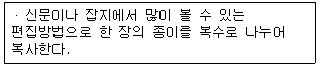
- 래그드(Ragged)
- 들여쓰기(Indent)
- 센터링(Centering)
- 데시멀 탭(Decimal Tab)
(정답률: 48%)
9. 다음 중 편지 병합(Mail Merge)에 대한 설명으로 옳지 않은 것은?
- 전체적인 내용은 동일하지만 수신인과 같이 특정 부분만 다른 여러 개의 문서를 만드는 경우에 적절하다.
- 외부 파일에 존재하는 데이터를 이용하여 작성할 수도 있다.
- 문서를 만들면서 동시에 전자우편(E-Mail)으로 발송해 준다.
- 병합된 편지는 직접 인쇄하거나 파일로 만들 수 있다.
(정답률: 63%)
10. 다음 중 보일러 플레이트(Boiler Plate)와 관련있는 것은?
- 꼬리말(Footer)
- 메일머지(Mail Merge)
- 매크로(Macro)
- 병행처리(Spool)
(정답률: 69%)
11. 다음은 워드프로세서의 어느 용어에 대한 설명인가?
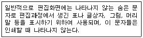
- 와일드카드(Wild Card)
- 조판부호(Control Code)
- 아스키 코드(ASCII Code)
- 유니코드(Unicode)
(정답률: 70%)
12. 다음은 워드프로세서의 어느 용어에 대한 설명인가?
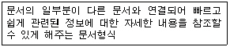
- 위지윅(WYSIWYG)
- 포스트스크립트(Post Script)
- 트루타입(True Type)
- 하이퍼텍스트(Hypertext)
(정답률: 76%)
13. 다음 중 교정부호에 대한 설명으로 옳지 않은 것은?
- : 문서에서 줄 간격을 띄우라는 부호이다.
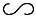
: 단어나 문자의 위치를 변경하라는 부호이다.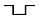
: 지정된 부분을 아래로 내리라는 부호이다.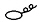
: 불필요한 내용을 삭제하는 부호이다.
(정답률: 79%)
14. 다음 교정부호 중 원래 문장의 글자 수에 변동이 없는 부호로 가장 적당한 것은?
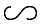
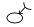
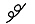
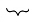
(정답률: 83%)
15. 공문서 처리의 일반원칙이 아닌 것은?
- 행정계통처리
- 책임처리
- 법령적합처리
- 기간 명시후 처리
(정답률: 57%)
16. 서로 연관성이 있는 두 개 이상의 안건을 동일한 기안용지에 제 1안, 제 2안 등으로 기안하는 것은?
- 일반기안
- 일괄기안
- 수정기안
- 공동기안
(정답률: 68%)
17. 다음 중 한글코드에 대한 설명으로 옳은 것은?
- KS X 1001 완성형 한글코드는 정보처리용 코드로 현대 한글을 모두 표현할 수 있다.
- KS X 1001 조합형 한글코드는 정보교환시 제어문자와 충돌하지 않아 정보교환용으로 주로 사용한다.
- KS X 10⑤-1 한글코드는 완성형을 토대로 조합형의 장점을 수용한 코드로 영문과 한글 모두를 2바이트로 표현한다.
- KS X 1001 완성형 한글코드는 영문과 한글 모두를 2바이트로 표현한다.
(정답률: 63%)
18. 전자출판에서 개체(Object) 처리 기능에 관한 설명으로 적절하지 않은 것은?
- 여러 가지의 개체들을 서로 연결하거나 분해해서 사용할 수 있다.
- 클립 아트(Clip Art) 형태의 그림을 사용할 수 있다.
- 각각의 그림이나 파일을 개별적인 요소로 구분하여 처리한다.
- 작성된 그림을 여러 가지 새로운 형태의 이미지로 바꿔주는 기능이다.
(정답률: 62%)
19. 모핑(Morphing)에 대한 설명 중 적절한 것은?
- 3차원 그래픽에서 음영과 채색을 적절히 조절하여 실제감을 극대화하는 작업
- 2개의 이미지를 적절히 연결시켜 변환, 통합하는 기법
- 색의 농도나 색조를 바꾸는 이미지 변형 작업
- 글자와 글자 사이를 적절한 간격으로 띄워주는 작업
(정답률: 63%)
20. DTP에 관한 설명 중 옳지 않은 것은?
- CD-ROM 타이틀의 저작도구이다.
- WYSIWYG의 구현이 가능하다.
- Desk Top Publishing의 머릿글자이다.
- 대부분 PC에서 작업이 가능하다.
(정답률: 62%)
2과목: PC 운영 체제
21. 한글 Windows 98에서 일정 시간 동안 아무런 작업을 하지 않으면 모니터와 하드디스크를 자동으로 꺼서 절전 모드로 바꾸는 기능은 무엇인가?
- UPS 기능
- Back Up 기능
- MTU 설정기능
- OnNow 기능
(정답률: 69%)
22. 다음은 한글 Windows 98에서 지원되는 기능의 무엇을 설명한 것인가?
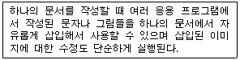
- OLE(Object Linking and Embedding)
- 멀티태스킹(Multi-Tasking)
- 자동감지설치(Plug and Play)
- 멀티포맷(Multiple Formats)
(정답률: 79%)
23. 한글 Windows 98 설치과정 중에 화면에 나타나는 내용으로 옳지 않은 것은?
- 윈도우 98을 설치하는데 필요한 디스크의 공간을 확인하는 과정
- 시스템 파일 검색 및 저장 과정
- 시동 디스크 작성과 FAT64를 구성하는 과정
- CD-Key 입력과 시스템 레지스트리 데이터베이스 초기화 과정
(정답률: 48%)
24. 한글 Windows 98의 [설정]-[제어판]-[인터넷 옵션]에서 설정 가능한 정보가 아닌 것은?
- 웹과 메일 서버 설정
- 보안 수준과 인터넷 내용등급 지정
- 임시 인터넷 파일과 열어본 페이지 목록 보관 일 수
- 각 인터넷 서비스에 자동으로 연결하여 사용할 프로그램 지정
(정답률: 40%)
25. 한글 Windows 98에서 열린 창을 모두 최소화하려 한다. 다음 설명 중 옳지 않은 것은?
- 작업표시줄의 빈 공간을 마우스 오른쪽 단추로 클릭한 후 [모든 창을 최소화]를 클릭한다.
- 열려 있는 대화 상자를 포함하여 모두 최소화할 수 있다.
- 일단 최소화된 창을 열려면 작업표시줄에서 해당 창의 단추를 클릭한다.
- 최소화된 모든 창을 이전 크기로 복원하려면 작업표시줄의 빈 공간을 마우스 오른쪽 단추로 클릭하고 [모두 최소화 실행 취소]를 클릭한다.
(정답률: 34%)
26. 한글 Windows 98의 [작업표시줄]에 관한 다음 설명 중 옳지 않은 것은?
- [작업표시줄]의 위치는 마우스 끌기로 화면의 상하좌우 원하는 곳 어디든 둘 수 있다.
- [작업표시줄]은 자동 숨김 후 마우스 포인터가 작업표시줄 근처에 가면 표시되도록 할 수도 있다.
- 실행중인 프로그램들이 단추형식으로 표시되는 부분이 작업표시줄이다.
- [작업표시줄]은 크기 조절이 불가능하다.
(정답률: 72%)
27. 한글 Windows 98에서 [제어판]-[시스템] 선택시 확인 가능한 정보가 아닌 것은?
- Windows 98의 버전과 사용자 정보
- CPU의 종류와 RAM 용량
- 인터넷 옵션과 통신정보
- 컴퓨터에 설치된 각종 장치의 정보 및 작동 상태
(정답률: 56%)
28. 설치된 한글 Windows 98의 구성요소를 바꾸려고 한다. 시작 메뉴의 [설정]-[제어판]-[프로그램 추가/제거]-[Windows 설치]의 항목을 선택하였을 때 Windows 구성요소에 포함되지 않는 것은?
- 프린터
- 멀티미디어
- 보조 프로그램
- 시스템 도구
(정답률: 61%)
29. 한글 Windows 98의 탐색기에서 마우스를 이용하여 디스크 드라이브에 있는 파일이나 폴더를 복사 또는 이동하려고 할 때 다음 중 옳은 것은?
- 동일한 디스크 드라이브에 있는 파일을 복사할 경우에는 [Shift]키를 누른 상태로 드래그 한다.
- 동일한 디스크 드라이브에 있는 파일을 이동할 경우에는 [Ctrl]키를 누른 상태로 드래그 한다.
- 서로 다른 디스크 드라이브에 있는 파일을 복사할 경우에는 [Shift]키를 누른 상태로 드래그 한다.
- 서로 다른 디스크 드라이브에 있는 파일을 이동할 경우에는 [Shift]키를 누른 상태로 드래그 한다.
(정답률: 56%)
30. 한글 Windows 98에서 LNK 확장자를 갖는 파일에 대한 다음 설명 중 옳지 않은 것은?
- 연결 정보를 가지고 있으므로 삭제하면 연결 프로그램에 중요한 영향을 끼친다.
- 단축아이콘과 관계가 있다.
- 시스템에 여러개 존재할 수 있다.
- 연결 대상 파일의 위치정보를 가지고 있다.
(정답률: 52%)
31. 한글 Windows 98에서 파일 삭제와 관련된 다음 설명 중 옳지 않은 것은?
- DOS 세션에서 삭제된 파일은 휴지통에 보관되지 않는다.
- 휴지통 비우기를 하면 완전히 삭제된다.
- 파일이 차지하고 있던 디스크 영역은 0으로 리셋(reset)된다.
- 삭제할 파일을 선택하고 [Shift]키+[Delete]키를 누르면 휴지통에 저장되지 않고 완전히 삭제할 수 있다.
(정답률: 52%)
32. 한글 Windows 98에서 메모장을 이용하여 텍스트 문서를 열 때마다 시스템 시계를 참조하여 현재의 시간과 날짜를 문서의 끝에 자동으로 추가되도록 하려 한다. 다음 중 옳은 것은?
- 시스템 트레이에 있는 시간을 끌어다 문서의 원하는 위치에 놓는다.
- 문서의 첫 행 왼쪽에 .LOG라고 입력한다.
- [편집] 메뉴의 시간/날짜를 사용한다.
- 문서의 적당한 위치에 커서를 놓고 기능키 [F5]를 누른다.
(정답률: 52%)
33. 한글 Windows 98의 그림판에서 오른쪽 버튼을 누른 상태에서 그린 경우 다음 중 옳은 것은?
- 연필과 붓 모두 전경색으로 그려진다.
- 연필과 붓 모두 배경색으로 그려진다.
- 연필은 전경색, 붓은 배경색으로 그려진다.
- 연필은 배경색, 붓은 전경색으로 그려진다.
(정답률: 57%)
34. 한글 Windows 98에서 PWL 확장자가 붙은 파일에 대한 설명 중 옳지 않은 것은?
- 시스템에 여러 개 존재할 수 있다.
- 사용자 암호가 보관된 파일이다.
- 지울 수 없다.
- C:\Windows 폴더에 존재한다.
(정답률: 59%)
35. 한글 Windows 98에서 발생하는 여러 문제 중 “메모리가 부족하여 프로그램을 실행할 수 없는 경우”의 해결방안으로 가장 적절하지 못한 것은?
- 메모리 문제 해결사를 실행하여 불필요한 프로그램을 종료하고 다시 실행한다.
- [시작]-[프로그램]-[시작프로그램]에 불필요한 프로그램을 삭제하고 시스템을 재시작한다.
- [제어판]-[시스템]-[성능]에서 [가상메모리] 크기를 적절히 설정한다.
- [디스크 검사]를 실행하여 디스크 공간을 늘린다.
(정답률: 46%)
36. 다음 설명 중 ( ) 안에 들어갈 단어를 바르게 나열한 것은?
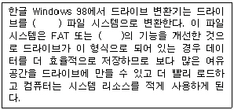
- FAT 32, FAT 16
- FAT 64, FAT 32
- FAT 16, FAT
- FAT 32, FAT 64
(정답률: 63%)
37. 한글 Windows 98에서 시스템 관리 마법사를 이용하면 설정한 예정시간에 자동으로 시스템을 효율화 시킬 수 있다. 다음 중 시스템관리 작업 대상으로 옳지 않은 것은?
- 프로그램 추가, 삭제의 자동화
- 하드디스크 오류 검사
- 불필요한 파일 제거
- 자주 사용하는 프로그램의 속도 향상
(정답률: 44%)
38. 다음 중 라우터(Router)의 기능에 대한 설명으로 옳은 것은?
- 클라이언트가 동적으로 공인 IP 주소를 할당받아서 인터넷을 사용할 수 있게 해준다.
- 두 개 이상의 동일한 LAN 사이를 연결하면서 전송 신호를 증폭시켜 준다.
- 다른 네트워크를 인식하여 경로를 배정하며, 수신된 패킷에 의하여 타 네트워크 또는 자신의 네트워크 노드를 결정한다.
- 라우터는 흐름 제어(Flow Control) 기능이 없다.
(정답률: 44%)
39. 다음 중 패킷 교환 방식에 대한 설명으로 옳지 않은 것은?
- 패킷 교환 방식은 회선 교환 방식에 비해 회선의 점유라는 자원 낭비가 없다.
- 패킷 교환 방식은 회선 교환 방식과 비교할 때 실시간 서비스에 있어서 더 적합하다.
- 패킷이 목적지에 도달할 수 있도록 경로 배정(Routing)이 필요하다.
- 패킷의 흐름을 제어할 수 있는 트래픽 제어(Traffic Control) 기술이 필요하다.
(정답률: 39%)
40. 한글 Windows 98에서 공유할 드라이브 또는 폴더의 등록 정보에서 공유와 관련된 설정 내용으로 옳지 않은 것은?
- 네트워크 상에서 검색할 때 공유할 자원의 이름에 대한 설정
- 읽기 전용이나 읽기/쓰기에 대한 설정
- 암호에 따른 사용 권한에 대한 설정
- 공유할 기간에 대한 설정
(정답률: 51%)
3과목: 컴퓨터 및 정보활용
41. 다음 중 CISC와 RISC의 차이를 대비한 것으로 옳지 않은 것은?
- CISC : 복잡하고 기능이 많은 명령어...RISC : 간단한 명령어
- CISC : 다양한 사이즈의 명령어...RISC : 동일한 사이즈의 명령어
- CISC : 복잡한 주소지정 방식...RISC : 간단한 주소지정 방식
- CISC : 많은 수의 레지스터...RISC : 적은 수의 레지스터
(정답률: 54%)
42. 다음 중 십진수 -49를 부호와 1의 보수 방법에 의하여 8bit 2진수로 표현한 것으로 맞는 것은?
- 00110001
- 10110001
- 11001110
- 11001111
(정답률: 47%)
43. 다음은 무엇에 대한 설명인가?
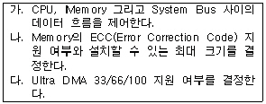
- 칩셋(Chip Set)
- SCSI 카드
- PCMCIA 카드
- AGP
(정답률: 64%)
44. 다음 문장의 ( ) 안에 들어갈 용어를 순서대로 나열한 것은?
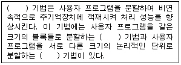
- 가상 기억장치(Virtual Memory), 세그먼테이션(Segmen- tation), 페이징(Paging)
- 가상 기억장치(Virtual Memroy), 페이징(Paging), 세그먼테이션(Segmentation)
- 중첩 기억장치(Nested Memory), 페이징(Paging), 세그먼테이션(Segmentation)
- 중첩 기억장치(Nested Memory), 세그먼테이션(Segmen- tation), 페이징(Paging)
(정답률: 65%)
45. 다음 중 중앙처리장치(CPU)에서 명령어를 처리하는 과정을 순서대로 올바르게 나열한 것은?
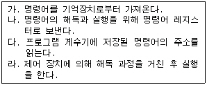
- 가→나→다→라
- 나→가→다→라
- 다→가→나→라
- 가→다→나→라
(정답률: 43%)
46. 다음 중 DMA에 대한 설명으로 옳지 않은 것은?
- CPU의 계속적인 관여없이 데이터를 메모리와 주변장치 사이에 전송하게 한다.
- DMA가 메모리를 접근하기 위해서는 Cycle Steal을 한다.
- 전송이 끝나면 DMA 제어기는 CPU를 인터럽트(Interrupt) 한다.
- DMA가 입출력 처리를 하는 동안 CPU는 정지상태에 들어간다.
(정답률: 55%)
47. 다음 중 목적코드(Object Code)를 시스템 라이브러리를 참조해서 실행 가능한 모듈로 생성해 주는 시스템 소프트웨어는?
- 링커(Linker)
- 컴파일러(Compiler)
- 어셈블러(Assembler)
- 인터프리터(Interpreter)
(정답률: 55%)
48. 다음 중 바이러스 예방 지침으로 옳지 않은 것은?
- 새로운 프로그램을 사용할 때에는 최신 버전의 백신 프로그램을 사용해 검사한다.
- 바이러스가 네트워크로 전염될 가능성에 대비해 가급적 공유 폴더를 이용한다.
- 중요한 프로그램이나 자료는 항상 백업한다.
- 비상시를 위해 쓰기 방지 탭이 붙여진 도스 부팅 디스켓을 준비해 둔다.
(정답률: 68%)
49. 다음 중 컴파일러(Compiler) 언어와 인터프리터(Interpreter) 언어의 차이점에 대한 설명으로 옳지 않은 것은?
- 인터프리터 언어가 컴파일러 언어보다 일반적으로 실행 속도가 빠르다.
- 인터프리터 언어는 대화식 처리가 가능하나, 컴파일러 언어는 일반적으로 불가능하다.
- 컴파일러 언어는 목적 프로그램이 있는 반면, 인터프리터 언어는 일반적으로 없다.
- 인터프리터는 번역 과정을 따로 거치치 않고 각 명령문을 디코딩(Decoding)을 거쳐 직접 처리한다.
(정답률: 49%)
50. 컴퓨터 문제 예방 및 해결을 위한 방법으로 가장 거리가 먼 것은?
- 시스템 이상에 대비하여 부팅 디스켓을 만들어 둔다.
- 바이러스 검사를 정기적으로 실행한다.
- 시스템 설정 파일과 중요 데이터 파일은 원본 파일과 동일한 위치에 백업하여 둔다.
- 가급적 불필요한 프로그램을 설치하지 않도록 한다.
(정답률: 67%)
51. SCSI 장치가 인식되지 않을 때 점검해야 할 사항으로 옳지 않은 것은?
- 스카시 어댑터카드가 제대로 장착되었는지 다른 장치와 IRQ 충돌은 없는지 점검한다.
- SCSI 하드디스크의 Master/Slave 점퍼 설정을 점검한다.
- SCSI 장치의 ID 충돌은 없는지 점검한다.
- SCSI 마지막 장치에 터미네이션 점퍼 설정이 되었는지 점검한다.
(정답률: 47%)
52. 1.44MB 플로피 디스크 한 장에 11KHz의 스테레오 소리를 16비트 표본추출값을 이용하여 저장할 때 얼마동안 저장할 수 있는가?
- 약 8초
- 약 17초
- 약 33초
- 약 65초
(정답률: 51%)
53. Java는 웹(Web) 상에서 멀티미디어 데이터를 처리하기 위해 유용하게 사용될 수 있는 객체 지향 언어이다. 다음 중 객체 지향 언어가 제공하는 기본적인 개념과 거리가 먼 것은?
- 상속성(Inheritance)
- 캡슐화(Encapsulation)
- 오버로딩(Overloading)
- 국부성(Locality)
(정답률: 46%)
54. 파형 오디오(Waveform Audio)는 소리의 디지털 표현으로 주기적으로 소리의 파형에 대한 표본을 모아 데이터로 저장하는 방식이다. 다음 중 표본 추출률(Sampling Rate)를 올바르게 설명한 것은?
- 소리가 기록되는 동안 초(Second)당 음이 측정되는 횟수를 의미하며, 단위를 bps로 나타낸다.
- 소리가 기록되는 동안 초(Second)당 음이 측정되는 횟수를 의미하며, 단위를 hertz로 나타낸다.
- 소리가 기록되는 동안 분(Minute)당 음이 측정되는 횟수를 의미하며, 단위를 bps로 나타낸다.
- 소리가 기록되는 동안 분(Minute)당 음이 측정되는 횟수를 의미하며, 단위를 hertz로 나타낸다.
(정답률: 54%)
55. 다음 중 데이터 보안의 암호화에 대한 설명으로 옳지 않은 것은?
- 대칭키 암호화 시스템으로 많이 사용되는 기법으로는 RSA가 있으며, 대표적인 공개키 암호 시스템으로는 DES가 있다.
- 복호화(Decryption)란 암호화된 데이터를 원상으로 복구하는 것이다.
- 암호화 방법은 대칭키와 비대칭키 방식으로 구분이 된다.
- 데이터를 보낼 때 송신자가 지정한 수신자 이외에는 그 내용을 알 수 없도록 데이터를 암호화하여 안전하게 전송할 수 있다.
(정답률: 38%)
56. 다음은 ISDN과 B-ISDN에 대한 설명이다. 옳지 않은 것은?
- 여러 가지 통신 서비스를 하나의 통신망으로 통합하여 처리하는 기술이다.
- ISDN 또는 B-ISDN 사용자는 다른 사용자와의 통신에 음성, 데이터, 문서 등의 통신 서비스를 동시에 제공받을 수 있다.
- B-ISDN은 프레임 릴레이(Frame Relay) 전송 기술을 기반으로 구축되어진다.
- 단일 가입자 번호로 다양한 종류의 통신 서비스를 저렴하게 받을 수 있다.
(정답률: 46%)
57. 다음은 차세대 이동 통신인 IMT-2000에 대한 설명이다. 옳지 않은 것은?
- 2세대 이동 통신인 UMTS 기반 위에서 구축이 이루어지고 있다.
- 현대의 이동 통신의 문제점인 지역적 한계와 멀티미디어 통신에 필요한 고속 전송이 불가능한 기술적 한계를 극복하기 위한 기술이다.
- 이동 통신의 문제를 해결하기 위해 세계 각국이 협의를 거쳐 내놓은 대안이 IMT-2000이다.
- 전세계 어느 나라에서나 이용할 수 있는 공통 주파수를 확보해 놓고 있다.
(정답률: 38%)
58. 호스트 100대 정도를 운영하는 기관에 적당한 인터넷 주소는?
- 클래스 A
- 클래스 B
- 클래스 C
- 클래스 D
(정답률: 52%)
59. 다음은 전자 메일에 사용되는 프로토콜에 대한 설명이다. ( ) 안에 들어갈 용어를 순서대로 나열한 것은?
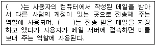
- SNMP, TCP
- POP3, SMTP
- TCP, SNMP
- SMTP, POP3
(정답률: 48%)
60. 다음 정보통신윤리위원회에 대한 설명 중 옳지 않은 것은?
- 음성과 비음성통신내용과 관련하여 유해정보 및 음란정보에 관한 심의 및 감독을 시행하는 위원회이다.
- 인터넷이나 온라인상에서의 저작권문제를 부가적으로 취급하며, 정품소프트웨어의 사용여부도 확인 감독한다.
- 음란이나 유해정보를 제공하는 개인이나 정보서비스업체를 법률적으로 감독할 수 있다.
- 온라인이나 700번 전화서비스, 전화방 등의 유해여부를 심의하여 단속을 의뢰할 수 있다.
(정답률: 43%)